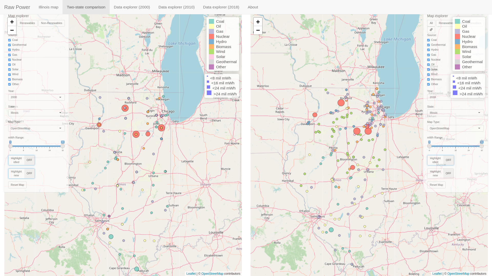

Project 2: Introduction | Data | Interesting notes on the data
Link to the visualization is here.
Author: David Shumway

Project 2 - "Raw Power" visualizes power plant data from all 50 US states and the District of Columbia, as well as from the US as a whole, for the specific years of 2000, 2010, and 2020. The program is written in R with help from the Shiny and Leaflet R libraries. Data for the application may be found online on the EPA website. The application includes a single map view of Illinois power plants, a side-by-side view of any two states or the US as a whole, data explorers for the three datasets (2000-2018), and an about page. After removing empty data, such as power plants without any generation for a year under consideration, the total number of power plants represented in the data are 4,613, 5,393, and 8,604, for the years 2000, 2010, and 2018, respectively. Ten types of energy production are represented in the data including Coal, Geothermal, Hydro, Natural Gas, Nuclear, Petroleum, Solar, Wind, Biomass, and "other", where other is a catch-all energy category including other types of fossil fuels (e.g. tires, batteries, and chemicals) and solid waste.
Video walkthrough of the application (online at ).
The program may be run through any standard browser. Additionally, the program can be run from the R command line (see here for more details).
Project 2 - "Raw Power" visualizes power plant data from all 50 US states and the District of Columbia, as well as from the US as a whole, for the specific years of 2000, 2010, and 2020. The application includes a single map view of Illinois power plants, a side-by-side view of any two states or the US as a whole, data explorers for the three datasets (2000-2018), and an about page.